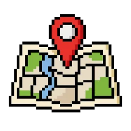

Transporter
100%
Speed
100%
Normal speed
Pollinators
0 (100%)
Pollen jar
0%
Nothing pollinated yet.
Journey 1 / —
—Current stop
Help pollinate Victoria! Build your transporter, manage power and budget, and navigate hazards.
Choose a control system, engine, pollinator crew, and support equipment before setting off.
Build your transporter one step at a time. Pick a brain, an engine, your crew, and some extras — the Next button only unlocks when a step is complete. One Honey Bee Hive carries 20,000–80,000 bees; one Robot Pollinator carries 20,000 robots. Keep an eye on budget and power.
At each stop, the Pollen jar shows how much that site will produce. The default is 80%; good events can push it to 100%, bad ones can pull it down to 70%.
Budget: $0 spent / $0 available (0 remaining)
Grid: 0 / 0 spaces used (0 remaining)
Power Used: 0W
Pick a control system to continue.
Transporter
100%
Normal speed
Pollinators
0 (100%)
Pollen jar
0%
Nothing pollinated yet.
Journey 1 / —
Current stop

Journey event

Journey log
Journey updates will appear here.
Each repair takes time. Choose one task at a time.
Final score
—/100
Mission complete
Compare your original transporter with a new design. Which changes could improve your next journey?
1 / 6 · Quick tour